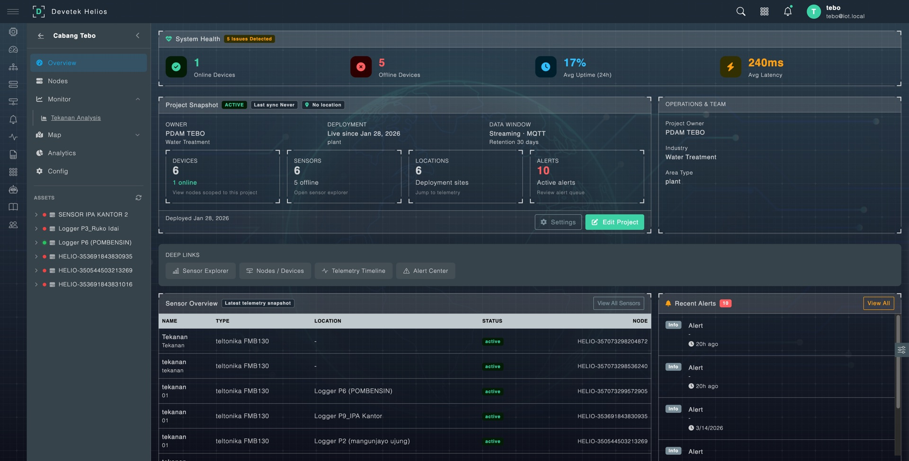
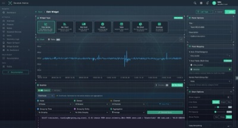
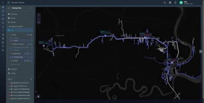
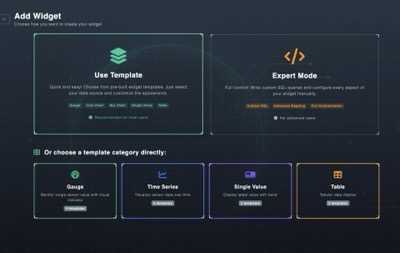
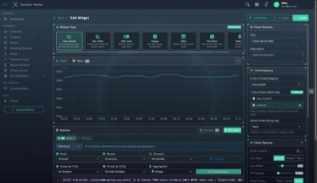

Platform monitoring IoT end-to-end untuk infrastruktur kritis. Koneksikan device apapun — ESP32, Arduino, PLC, Raspberry Pi, atau perangkat lain — via HTTP, TCP, atau MQTT. Tidak terkunci vendor tertentu.

Dipercaya oleh organisasi terkemuka
Dari data mentah sensor hingga keputusan operasional — semua dalam satu ekosistem.
Data real-time dari sensor, node & gateway dalam satu dashboard. Tidak ada area gelap dalam operasi Anda.
Deteksi anomali berbasis ML & prediksi untuk wawasan prediktif. Tahu sebelum masalah terjadi.
Alert otomatis, perintah device, dan pembuatan laporan untuk respons cepat. Kendalikan dari mana saja.
Toolkit lengkap untuk monitoring, analisis, dan pengendalian infrastruktur IoT Anda.
Bangun dashboard sesuai kebutuhan operasi. 6+ tipe widget, SQL editor, dual data source (PostgreSQL + ClickHouse).
SelengkapnyaAset Anda di peta, secara real-time. Upload SHP, GeoJSON, KML. DMA boundary & live sensor data di peta.
SelengkapnyaConfigurable threshold rules, severity levels, real-time detection, dan device command trigger otomatis.
SelengkapnyaFilter hierarkis, multi-sheet XLSX export, chart preview, dan template laporan reusable.
SelengkapnyaAnomaly detection, forecasting, ML dashboard, notifikasi otomatis, daily summary. AI untuk operasi prediktif.
SelengkapnyaFull CRUD nodes, auto-discovery, pairing workspace, relay control, multi-protocol (MQTT + TCP Teltonika).
SelengkapnyaScreenshot langsung dari platform — dashboard, peta, laporan, dan lainnya.




Devetek Helios beradaptasi dengan kebutuhan monitoring dan kontrol unik setiap industri.
Monitoring DMA, deteksi kebocoran, tekanan & debit real-time, webhook sync ke server PDAM, visualisasi jaringan pipa.
Jelajahi Solusi →Monitoring VSD, konsumsi daya, prediktif maintenance, monitoring grid distribusi.
Segera HadirMonitoring pabrik, telemetri produksi, kontrol kualitas, prediktif maintenance.
Segera HadirKelembaban tanah, stasiun cuaca, kontrol irigasi otomatis, monitoring tanaman.
Segera HadirHubungkan device apapun — ESP32, Arduino, PLC, Raspberry Pi — via MQTT, TCP, atau HTTP. Auto-discovery bawaan.
Data dari device otomatis di-parsing, validasi, dan di-transform ke format database. Zero manual config.
Dashboard, alert rule, ML anomaly & forecast memproses data. Webhook & DB sync ke server Anda.
Terima notifikasi, kirim command, export laporan, kontrol relay — dari mana saja.
Tidak terkunci vendor tertentu. Selama device Anda support HTTP, TCP, atau MQTT — langsung konek ke Helios.
Protokol IoT standar. Publish/subscribe real-time dengan QoS. Ideal untuk sensor yang mengirim data periodik.
Koneksi raw TCP untuk device seperti Teltonika FM, PLC, dan perangkat industrial. Auto-parsing bawaan.
REST API endpoint. Kirim data via HTTP POST dari device manapun yang punya koneksi internet. Webhook-friendly.
Dari sensor di lapangan hingga dashboard Anda — semua otomatis.
Jadwalkan demo gratis dan lihat bagaimana Devetek Helios dapat mengoptimalkan infrastruktur Anda.